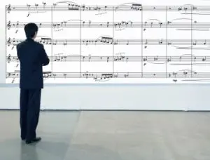

De nada adianta saber ler bem a partitura, identificar as notas no
pentagrama e conhecer as figuras de tempo, se você não sabe onde se
encontram as notas no seu instrumento. Sendo assim, não pare este
estudo por aqui. Tente tocar algumas partituras fáceis (que
encontrará na página do Teclado Virtual).
Comece bem devagar, compasso por compasso, e vá aumentando a
velocidade aos poucos.
Não tenha pressa. Tenha paciência...
Como Ler Partitura de Forma Eficiente
Este talvez seja o assunto mais relegado a um segundo plano para as
pessoas que começam aprender a tocar um instrumento.
Ler partitura, a linguagem da música, é como, de fato, aprender um
outro idioma, uma nova língua.
E como todos sabemos, dá trabalho. A leitura é lenta no começo.

Entretanto, muita gente começa a praticar pelas maneiras mais
difíceis, que mais desperdiçam tempo e acabam gerando desânimo.
Geralmente as pessoas aprendem a ler partitura nas claves, aprendem
as sinalizações e regras gerais e já querem pegar uma música, mesmo
que pequena e tocar no seu instrumento.
O problema disso é que, se você não tiver
conhecimento da localização das notas no seu instrumento
, você vai perder muito tempo até tocar uma linha ou um compasso,
pois vai demorar a ler a nota na pauta e demorar mais ainda para
achar a nota no instrumento.
Diante deste problema muito comum, vamos indicar aqui algumas dicas
valiosas para você melhorar e fazer seu treino de leitura render o
máximo possível.
Aumentando a velocidade em 3 passos
1) Saiba onde estão as notas no seu instrumento
Enquanto você pratica a leitura na pauta,
estude, separadamente, a localização das notas no
instrumento. Estude, também de forma separada, exercícios que trabalham a
leitura rítmica (sem notas, apenas ritmos) e a melódica (pode usar
um piano online para ouvir, se afinar e cantar, ou seu próprio
instrumento).
Quando sua leitura das notas e das figuras rítmicas estiver um pouco
mais afiada, e quando você tiver um pouco mais de domínio sobre a
localização das notas no instrumento, aí sim, comece a ler músicas,
pequenas. Que seja uma linha por dia, mas leia e toque.
2) Pratique todos os dias
Assim como um novo idioma, se você
PRATICAR TODO OS DIAS você ficará cada vez mais
familiarizado e ganhará fluência e velocidade na leitura.
3) Variedade no repertório
Para ler partitura, é muito importante, também, que você procure o
máximo de peças para praticar. O acervo disponível na internet é
grande. Use e abuse.
Dicas para executar corretamente as Semicolcheias
Agora que você já aprendeu a ler partitura, chegou a hora de dar
mais um passo na sua jornada musical. Por isso, vamos agora dar uma
atenção especial para as semicolcheias. Elas parecem ser mais
difíceis do que realmente são. Por isso, assista esta aula super
tranquila e aprenda a solfejar e tocar as Semicolcheias com o
metrônomo.